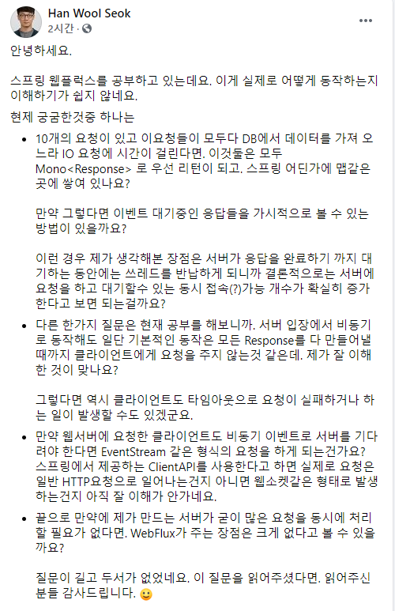

20201108 KSUG 질문 답변
페이스북에서 KSUG 커뮤니티 글을 보다가

위와 같은 질문글을 보았는데 댓글로 달기에는 내용이 너무 많아서 죽어있던 블로그를 심폐소생해보았다.
10개의 요청이 있고 이요청들이 모두다 DB에서 데이터를 가져 오느라 IO 요청에 시간이 걸린다면. 이것둘은 모두 Mono 로 우선 리턴이 되고. 스프링 어딘가에 맵같은곳에 쌓여 있나요?
리액티브에 대한 이해가 필요한 부분입니다. 정답만 말씀드리면 db에서 데이터를 가져올때까지 다음 코드가 실행되지 않습니다. map같은데에 저장하지는 않고 thread가 block을 하고 있는 것과 비슷합니다. db에서 데이터를 다 가져오면 mono의 다음 동작이 실행됩니다.
CompletableFuture를 사용해보셨다면 하나의 비동기 동작이 종료되고 다음 비동기 동작을 실행이 chain 형태로 이루어지는데 mono도 mono.flatmap(x -> mono).flatmap(x -> mono).subscribe(x -> {}) 체인 형태로 동작을하고 객체는 바로 리턴이 되지만 onNext 이벤트를 받는 mono는 그 안에 선언적인 코드가 동작하고 onNext 이벤트를 받지 못하면 대기하는 구조입니다.
리액티브 프로그래밍 배경 지식 없이 mono를 이해하기는 힘드므로
https://projectreactor.io/docs/core/release/reference 위의 메뉴얼을 읽어보시거나 https://www.youtube.com/watch?v=8fenTR3KOJo 토비님의 방송을 들어보시는 것을 추천 드립니다.
만약 그렇다면 이벤트 대기중인 응답들을 가시적으로 볼 수 있는 방법이 있을까요?
모르겠네요
이런 경우 제가 생각해본 장점은 서버가 응답을 완료하기 까지 대기하는 동안에는 쓰레드를 반납하게 되니까 결론적으로는 서버에 요청을 하고 대기할수 있는 동시 접속(?)가능 개수가 확실히 증가한다고 보면 되는걸까요?
반납이라기보다는 기존 servlet은 request 마다 thread를 생성하기 때문에 request 갯수는 thread라고 보면 되는데. 웹플럭스는 request가 몇백개라도 request IO를 처리하는 thread는 하나입니다. 쓰레드 부담이 현저하게 줄어들죠.
다른 한가지 질문은 현재 공부를 해보니까. 서버 입장에서 비동기로 동작해도 일단 기본적인 동작은 모든 Response를 다 만들어낼 때까지 클라이언트에게 요청을 주지 않는것 같은데. 제가 잘 이해한 것이 맞나요?
이 질문은 위의 리액티브 프로그래밍에 대한 이해가 필요한 것 같습니다. 답만 말씀드리면 사용자에게 응답을 서버에서 비지니스 로직에 관련해서 처리도하지 않고 먼저 응답을 줄수 있는 방법은 존재할수(또는 존재할 필요) 없는것 같네요.
선언적 프로그래밍 방식으로 함수를 전달하고 mono가 onnext 이벤트를 받으면 이때 미리 선언한 함수를 실행하는 구조로 동작을 합니다. onnext 이벤트는 언제 줄지를 알 수 없죠.(아마 이 onnext 이벤트란 용어도 처음이시라면 헤갈리실 것 같네요. 대화를 진행하려면 일단 이런게 있습니다정도로만 이해해주세요..)
그렇다면 역시 클라이언트도 타임아웃으로 요청이 실패하거나 하는 일이 발생할 수도 있겠군요.
기존의 servlet 방식과 동일합니다. client server socket connection이 있고 이걸 처리합니다. 이걸 thread로하느냐 nio로 하느냐 차이이므로 위의 질문은 오류로 생각하면 될 것 같습니다.
만약 웹서버에 요청한 클라이언트도 비동기 이벤트로 서버를 기다려야 한다면 EventStream 같은 형식의 요청을 하게 되는건가요?
그냥 단일 request/response입니다. client server 간 http는 동기적으로 이루어집니다. 비동기 이벤트가 아닙니다.
스프링에서 제공하는 ClientAPI를 사용한다고 하면 실제로 요청은 일반 HTTP요청으로 일어나는건지 아니면 웹소켓같은 형태로 발생하는건지 아직 잘 이해가 안가네요.
위의 답변으로 대치
끝으로 만약에 제가 만드는 서버가 굳이 많은 요청을 동시에 처리 할 필요가 없다면. WebFlux가 주는 장점은 크게 없다고 볼 수 있을까요?
트래픽이 많지 않다면 장점은 없습니다. 반응형 프로그램은 이벤트에 응답하는 구조라 이벤트에 반응할 함수를 만들고 미리 선언해두는 선언적 프로그래밍 방식이 될 수 밖에 없습니다. 그래서 절차적인 코드에 비해서 코드가 어렵습니다.
질문이 길고 두서가 없었네요. 이 질문을 읽어주셨다면. 읽어주신분들 감사드립니다. 🙂
감사합니다.